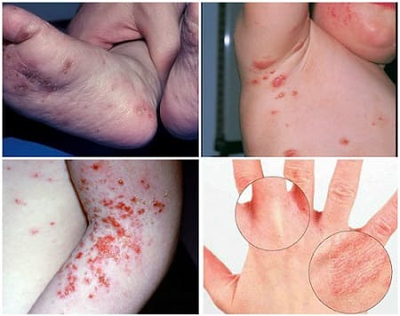

Эта кожная инфекция вызывается микроскопическим клещом, называемым чесоточный клещ. Этот клещ встречается по всему миру и может поразить любую возрастную группу. Чесоточные клещи располагаются в верхнем слое коже, где откладывают яйца. Чесотка может легко передаваться от человека к человеку, обычно через кожный или половой контакт. Клещ также может распространяться при совместном использовании одежды, полотенец и постельного белья, при посещении общественной бани. На неживых предметах, таких как полотенца и игрушки, клещи могут жить 2—3 дня. Однако на коже человека клещи могут жить больше месяца. Вспышки чесотки чаще встречаются в местах тесного контакта людей, таких как:
• детские дошкольные учреждения;
• школы;
• дома;
• больницы;
• санатории.
СИМПТОМЫ
Чесотка обычно проявляется специфической кожной сыпью и имеет следующие признаки:

ДИАГНОСТИКА
Ваш педиатр сможет диагностировать чесотку, просто посмотрев на сыпь, поскольку она зачастую имеет очень характерное расположение на теле, специфический внешний вид, напоминая ходы в коже, и вызывает сильный зуд. Ваш врач может взять соскоб с зараженного участка кожи и исследовать его под микроскопом на наличие клещей и/или их яиц. Тем не менее, если под микроскопом не удалось обнаружить ни клещей, ни яиц, это не исключает чесотку полностью.
ЛЕЧЕНИЕ
Чесотку ДОЛЖЕН лечить врач. Он пропишет вам специальный лосьон или крем. Очень важно строго следовать инструкциям по их применению. Они наносятся на всю поверхность тела, за исключением лица, рта и глаз. Чрезвычайно важно оставить средство на коже по меньшей мере на 8—12 часов и только потом смыть. Если вы будете держать их на коже меньше, это не даст нужного эффекта. Даже при полном соблюдении рекомендаций лечение часто нужно повторить через 7—10 дней.
Помимо использования лекарств, выписанных врачом, вот еще несколько советов по лечению чесотки:
Дети могут возвращаться в школу после того, как накануне вечером было проведено лечение.
СОВЕТ ДОКТОРОВ СИРС: НЕ МОЙТЕ СВОИ РУКИ! Да, вы правильно расслышали! После того как вы нанесете лосьон на все тело ребенка, начиная от шеи и до кончиков пальцев ног, не смывайте лосьон или крем со своих рук. Чесоточные клещи любят жить у основания пальцев. Если вы смоете крем или лосьон со своих рук после того, как нанесли его на тело своего ребенка, вы подвергаетесь риску заражения чесоткой. |
ПРОФИЛАКТИКА
Если вы и ваш ребенок тесно контактировали с кем-то, у кого чесотка, не существует 100%-ного верного способа избежать ее. Тем не менее есть способы понизить риск:
Даже если прикладывать все необходимые усилия, чесотка легко передается от человека к человеку.
Здоровье ребенка от докторов Сирс / Сирс У. и др.